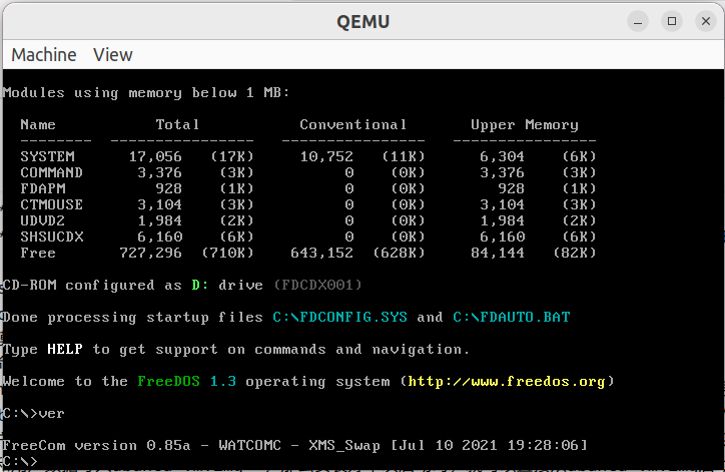
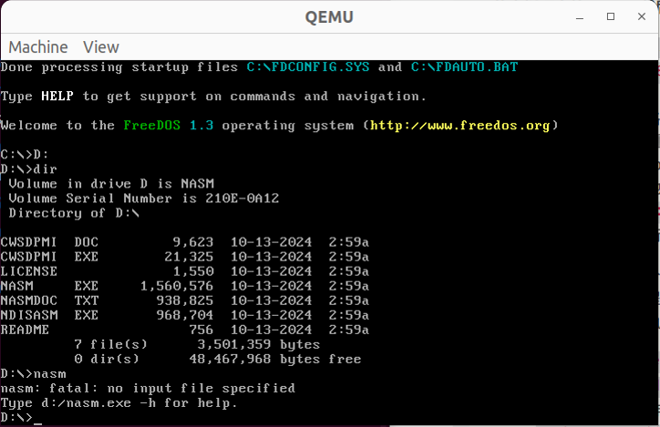

最近在做微机原理实验，需要用到dos系统+8086写汇编，同时os课程中也对模拟操作系统有一定的需求，因此选择了qemu作为操作平台。
根据我的理解，qemu就是一个虚拟机管理程序，可以用它来在PC上模拟各种操作系统、架构（其实就是给你一个空壳子cpu，包括x86的、arm的、risc-v的等等）
一个例子——qemu模拟ubuntu
先拿用qemu模拟ubuntu来举例，熟悉一下用qemu的流程，加深一下对qemu的理解
首先安装qemu1
sudo apt install qemu qemu-kvm
这里的qemu-kvm具体是什么并没有具体了解，只是知道他可以让你拥有更好的体验。
然后创建一个虚拟硬盘文件（默认在当前路径）：qemu-img create -f qcow2 ubuntu-vm.img 20G
qemu-img用于操作虚拟硬盘镜像文件
-f qcow2指定了镜像的格式，qcow2就是一种格式
剩下两个参数就是名字和大小，不做过多解释。但有一点要注意的是，虽然指定了20G，但它一开始不会用那么多，qcow2只会在写入数据时动态分配空间。
可以使用qemu-img info xxx.img查看虚拟硬盘信息。
假设我们已经有了一个ubuntu.iso文件，那么就可以用qemu启动这个镜像了：1
qemu-system-x86_64 -boot d -cdrom ubuntu.ios -m 2048 -hda ubuntu-vm.img -cpu host -smp 2
解释一下这些参数：
qemu-system-x86_64：指定使用x86-64架构的qemu-boot d：指定从光盘设备cdrom启动，通常用于从iso镜像启动操作系统-cdrom ubuntu.iso：指定要加载的iso文件作为cdrom设备，这里用的是我们下载的ubuntu.iso-m 2048：为其分配2048MB内存-hda ubuntu-vm.img：指定虚拟硬盘文件-cpu host：让qemu使用PC的CPU功能，提高性能-smp 2：为虚拟机分配两个CPU核心
然后就会打开qemu界面开始安装了。这里省略安装过程，假设已经安装完成，那么下次启动的时候就可以直接：1
qemu-system-x8^_64 -m 2048 -hda ubuntu-vm.img -cpu host -smp 2
这样qemu就会直接从对应的虚拟硬盘启动操作系统了。
[scode type=”blue”]
- iso文件：光盘映像（CD image），具体应用有：安装操作系统，软件分发、系统备份恢复、创建可启动的USB
- img文件：磁盘影像，具体应用有：硬盘备份和恢复、嵌入式开发、虚拟机映像、usb驱动器映像
[/scode]
[scode type=”share”]
对模拟ubuntu系统（其实就是装系统）的进一步理解：
在命令qemu-system-x86_64 -boot d -cdrom ubuntu.iso -m 2048 -hda ubuntu-vm.img -cpu host -smp 2中，我们可以看到，同时指定了iso文件和img文件。iso文件的作用是指定了要从中引导的光盘映像，-boot d表示虚拟机会首先尝试从光盘设备启动，那么qemu就会从ubuntu.iso中加载操作系统的安装程序，允许用户在虚拟机中安装ubuntu；而img文件指定了虚拟机的硬盘镜像文件，我们在安装ubuntu时，系统会将文件、配置和用户数据写入ubuntu-vm.img，那么安装好下次启动时，就可以直接从ubuntu-vm.img启动了，而不再需要从iso文件启动。
[/scode]
模拟dos
我们从freedos官网下载好镜像文件，我下载到的是FD13-LiveCD.zip文件，解压后得到了一个FD13BOOT.img文件和FD13LIVE.iso文件，总之最后能得到iso文件就行了
然后我们创建一个虚拟硬盘1
qemu-img create -f qcow2 freedos.img 500M
然后直接用iso文件启动安装即可：1
qemu-system-i386 -hda freedos.img -cdrom FD13Live.iso -boot d
[scode type=”share”]i386是用于模拟intel 80386(i386)及其兼容处理器的虚拟机，i386是intel第三代x86处理器架构，也被称为intel 386，他是第一款支持32位运算的处理架构。同时，他也向后兼容16位的dos系统。[/scode]
这里-m默认256MB或512MB，-cpu默认选择了兼容的，-smp默认使用1个。freedos是一个轻量级的操作系统，这些对freedos足够了。安装时，选择install to harddisk。
经历漫长的安装后，得到如下界面，输入ver可查看freedos版本信息，代表安装成功：

然后我们在终端ctrl+c退出qemu，再次开启时，只要使用qemu-system-x86_64 -hda freedos.img即可无需iso启动。
安装nasm
编译汇编我选择了nasm，下载好程序zip后，解压到本地。现在的问题就是，nasm是下载到本地的，而不是下载到虚拟机上的，虚拟dos上固然无法直接访问PC上的文件，并且为虚拟dos联网也麻烦的很。因此我们这里选择设置一块额外的虚拟硬盘放nasm，然后挂载到dos。
首先建一个img：qemu-img create -f qcow2 nasm.img 30M
然后qemu-system-i386 -hda freedos.img -hdb nasm.img -boot c，即可启动freedos，并将nasm.img挂载为第二块硬盘。
然后我们需要对其进行格式化，使得dos能识别他。首先使用fdisk命令进入硬盘管理，选择选项5：change current fixed disk drive，这里应该能看到刚刚挂载的第二块硬盘，只是他还没有被格式化。然后选择它，
选择选项1：create dos partition or logical dos drive，选择选项1：create primary dos partition，创建好后选择选项2：set active partition激活他，然后重启dos。
重启后，进入分区D：D:，使用format D:可对D:进行格式化，输入一个volume label（随意）即可。
最后输入dir，如果显示no files证明挂载成功。
现在我们要处理的下一个问题是，将nasm文件拷贝到我们的虚拟硬盘里。这里使用nbd（network block device）的方法，这种方法可以将远程服务器上的块设备（硬盘、硬盘镜像等）暴露为本地设备，并像本地硬盘一样读写。
回到ubuntu终端，依次执行以下命令：
sudo modprobe nbd：加载内核模块nbd，使得linux系统可以支持nbd；sudo qemu-nbd --connect=/dev/nbd0 nasm.img：使用qemu-nbd将虚拟硬盘镜像暴露为本地块设备，并把nasm.img视作/dev/nbd0sudo mount /dev/nbd0 /mnt：使用mount命令将/dev/nbd0挂载到/mnt上，挂载后虚拟硬盘镜像的内容会显示在/mnt目录下，用户可以读写该镜像内容（使用sudo fdisk -l /dev/nbd0可查看其信息，如果是fat16文件系统，则需要使用：sudo mount /dev/nbd0p0 /mnt）sudo cp /path_to_nasm/* /mnt：将nasm里的东西复制到已经挂载的虚拟硬盘镜像内（即/mnt）sudo umount /mnt：将虚拟硬盘镜像从/mnt卸载sudo qemu-nbd --disconnect /dev/nbd0：断开nasm.img与/dev/nbd0的连接，取消对nasm.img的映射
再次用qemu-system-i386 -hda freedos.img -hdb nasm.img -boot c启动dos后，进入D盘，即可看到nasm的相关文件已经存在，此时输入nasm，显示如下内容，表示安装成功：

我们还可以做进一步的升级。此时nasm只有在其所在文件夹才能运行，我们要把它配为环境变量，这样，在任何地方都能使用nasm命令了。
用echo %path%可以查看系统默认环境变量目录，我这里是c:\freedos\bin，现在我们只要把nasm.exe复制到这里面即可：1
copy your_path\nasm.exe c:\freedos\bin\
回到C盘，运行nasm -V可查看版本，代表配置成功。
编写汇编程序代码并测试运行
使用edit hello.asm创建第一个汇编程序，然后编辑以下内容：1
2
3
4
5
6
7
8
9
10
11
12
13
14
15
16section .data
msg db 'Hello, World!', '$' ; 字符串以 $ 结束
section .text
org 0x100 ; 程序开始地址为0x100
start:
; 输出字符串
mov dx, msg ; 将消息地址加载到DX寄存器
mov ah, 9 ; DOS功能调用，功能号9（显示字符串）
int 0x21 ; 通过中断调用DOS服务
; 正常退出程序
mov ah, 0x4c ; DOS功能调用，功能号4Ch（终止程序）
int 0x21 ; 通过中断返回到DOS
保存退出后，使用nsam -f bin hello.asm -o hello.com编译，生成一个hello.com的可执行文件，然后直接hello.com，就可以在屏幕上打印出对应内容了。
参数解释：-f bin：指定输出文件格式为binary，-f bin表示生成一个不包含头部信息的纯二进制文件，这个文件可以直接在dos或其他兼容的系统上执行。
[scode type=”share”]COM文件是简单的二进制文件，不包含任何文件头或元数据。这使得加载和执行过程非常简单。DOS 在加载 COM 文件时只需将其内容直接放入内存并跳转到指定地址（通常是 0x100）。[/scode]
后记——在dos中debug汇编代码
以上面的程序为例，执行debug hello.com，即可进入debug
[scode type=”share”]dos内置debug，可以用来调试.com文件或.exe文件[/scode]
常见debug命令：
- D(Dump)：显示内存内容，例如
d 0100会从0100开始显示内存 - E(Enter)：修改内存内容，例如
e 0100可以修改地址0100的内容 - R(Register)：显示和修改寄存器，例如
r可以显示所有寄存器内容，r ax可以修改ax的值 - T(Trace)：单步执行
- G(Go)：运行程序直到遇到
int 20h或int 21h - Q(Quit)：退出debug